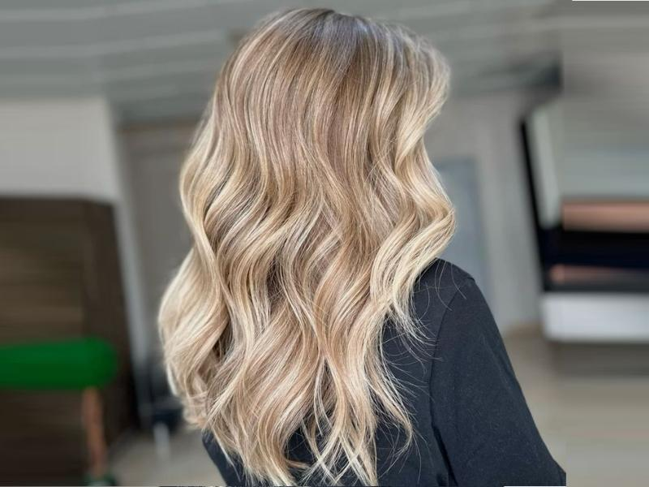

8:00 - 18:00
Часы работы Пн -Пт

Иногда хочется немного изменить свою прическу, не прибегая к полному окрашиванию. В таком случае может подойти одна из самых популярных техник – мелирование. Данный способ заключается в нанесении красящего вещества только на некоторые пряди. Благодаря этому создается обновленный образ: волосам придается дополнительный визуальный объем и эффект свежего, сияющего цвета, подчеркивается форма стрижки.
Существует множество различных вариантов мелирования волос, но всех их объединяет одно: не выполняется переход полностью в новый цвет.
Классическое. Предполагает равномерное, плавное обесцвечивание некоторых отдельных прядей по всей длине. Выполняется техникой нанесения краски на волосы, закрепленные в фольгу или через шапочку. Может быть мелкое и крупное. Чаще всего производится окрашивание только верхних слоев волос.
Калифорнийское. Пряди окрашиваются таким образом, что создается эффект выгоревших на солнце волос при помощи подбора нескольких оттенков, слегка отличающихся от натурального цвета. Таким образом получается мягкий переход.
Французское (мажимеш). В основе метода находится придание золотистого или жемчужного оттенка уже имеющимся светлым или русым волосам, поэтому подходит в основном блондинкам. Используется техника окрашивания безаммиачными средствами. В результате получается эффект мягкого перелива с насыщенными светлыми оттенками.
Бразильское. Выборочные пряди окрашиваются хаотично, при этом корни не затрагиваются. Данный вид мелирования помогает подчеркнуть естественную красоту, подходит для редких и тонких волос, делает их более объемными и пышными.
Венецианское. Подходит для обладательниц темных волос. В этом виде мелирования используется техника хаотичного открытого окрашивания прядей без использования фольги и сушка на воздухе. Таким образом создается эффект мягкого градиента и живых золотистых переливов и бликов.
Цветное. Заключается в окрашивании прядей различными яркими цветами (синим, розовым, зеленым и др.). Подходит для креативных и смелых людей, которые любят быть в центре внимания. Выполняется по такой же технике, как и классическое. Цветное мелирование нуждается в частой коррекции, т. к. яркие пигменты вымываются довольно быстро – через 2–3 недели.
Мажиконтраст. Используется краситель, цвет которого сильно отличается от натурального. Особенно эффектно смотрится на жгучих брюнетках. Применяется только на неповрежденных и здоровых волосах, т. к. используются стойкие, интенсивные средства. Данное окрашивание производится техникой с использованием фольги.
Вуаль. Является одним из наиболее безопасных видов мелирования, т. к. окрашивание производится только на верхней части волос техникой «на фольгу». Берутся максимально тонкие пряди, в результате чего создается эффект покрытия мягкой туманной дымкой, увеличивается глубина цвета.